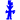

Terminology
In order to understand what fear means one has to define the term. According to the Cambridge dictionary fear is defined as: “An unpleasant emotion or thought that you have when you are frightened or worried by something dangerous, painful, or bad that is happening or might happen.”
[1]
“Fear involves a universal biochemical response, as well as a high individual emotional response. It alerts us to the presence of danger or the threat of harm, whether that danger is physical or psychological.”
[2]
“For thousands of years, hierarchical structures in society ruled with the power of intentionally evoking fear in their subjects to force social control. The artificial construction and maintenance of fear in a population by a ruling class has remained pervasive from the time of Ancient Egypt up until the modern day, realizing that a fearful population is easier to control than a fearless one.”
[3]
Manifestation of fear
Fear manifests itself in many different ways. It accompanies humans in everyday life. It can be as small as a bee. It can be as big as an elephant. It can be as significant as your mother, it can be as fleeting a stranger. Fear leads us more often than not into irrationality, unpredictable behaviour and madness. Fear is personal, powerful and a raw emotion. It can make your whole body stop from working or it can be the fuel that drives you. It can be destroying and it can be constructive. Fear is real and an illusion at the same time.
Children's thoughts
are endless
I started my own visual research simultaneously with writing: I contacted my friends who are teachers and asked them to start a project with their children related to fear. I just wanted the children to deal with the topic with no restrictions in mind. This visual research grew to be a big part of this thesis, since I had the chance to observe the outcomes and interpret the huge amount of material which I received from the children (age 3–16). When I look at this amazing collection, I am very happy to see the diversity in their creations. It’s exciting to see the richness–the endless images of the children’s minds and they‘re honesty in dealing with this topic. There is no holding back, especially within the younger age groups. They create colourful worlds regarding fear and their thoughts around it. Even the youngest ones among them have something to say, a story to tell, something to draw. They know what this emotion is to them and they know how to express it. The results are raw, honest and pure, as personal as they can get.

Shapes of fear
What is the shape of fear? How does someone cope with such a complex, unexplainable
feeling?
Fear has many different shapes.
Fear takes multiple forms.
Fear has no boundaries.
The child who is afraid of a bee. The child who is afraid of war. The child who is afraid of people wearing masks. The child who is afraid of guns. The child who is afraid of dogs. The child who is afraid of being home alone. The child who is afraid of other men. The child who is afraid of monsters. The child who is afraid of dying. The child who is afraid of ghosts. The child who is afraid of fear and does not want it to eat it up from the inside. The child who is afraid of spiders. The student who is afraid of failing. The student who is afraid of a bad grade. The student who is afraid of speaking up. The student who is afraid of being misunderstood. The student who is afraid of being laughed at. The student who is afraid of shame. The student who is afraid of coming home with a bad grade. The student who is afraid of having no friends. The senior who is afraid for his children. The senior who is afraid of losing someone he loves. The senior who is afraid of being alone. The senior who is afraid of diseases. The senior who is afraid that this disease will never heal again. The senior who is afraid of being alone and having nobody to talk to. The senior who is afraid of not having any friends anymore. The senior who is afraid of the pandemic and the uncertainty that comes with it. The senior who is afraid of the economic damage of the pandemic. The senior who is afraid of the restriction of personal freedom because of the decisions made by the government. The senior who tries not to be afraid of fear. The senior who is afraid of loneliness. The senior who is afraid of a dog. The senior who is afraid of small spaces. The senior who is afraid of nothing. The woman who is afraid of darkness and being alone. The woman who is afraid of the death of loved ones. The woman who is afraid of failing. The woman who is afraid of feeling alone. The woman who says that fear is what limits her from doing what she wants to do. The woman who is afraid of loss. The woman who is afraid of the future. The woman who is afraid of trying new things. The man who associates fear with a trap of the ego. The man who is afraid of not having enough money for supporting his family. The man who says fear is an illusion.
Analysing the drawings of the younger age groups
Looking at the drawings created by the younger children, it is beautiful to see how while trying to express their complex thoughts crashing through their minds they use a variety in colour, especially dominant ones like red, blue and black. I realised when they are drawing the ground or the sky, they do it in dark colors, mostly black. In some drawings they even create a dark black frame around the border of the paper on all sides. It feels like it keeps the child’s thoughts about fear trapped within this frame of the drawing. Their way of drawing is messy, full of life and energy, while trying to express this feeling. Analysing these drawings was a great lesson to learn, about the ideas of fear in our society nowadays and the safe havens these children create for themselves. The papers are filled with different forms like circles, rectangles, ellipses, lines and combinations of all of these. Most of them create their own safe space: they just draw themselves in a rectangle, or a circle, or they draw a line between them and the evil, or an angel taking care of the child. In this way they express their idea of something (maybe even invisible to us), which keeps them safe.
Save Havens
‘Oh oh let me tell you, there’s so many different safe havens’. It is the slide for the child who is afraid of Krampus. It is the bed for the child who is afraid of the monsters in the dark. It is the house to hide from storms and darkness. It is the bed that keeps you safe from the monsters and darkness outside. It is something above the child, which keeps it safe and away from the bad people. It is the umbrella that saves you in a storm. It is the house that keeps you in a safe environment. It is the child that is surrounded by a rectangle, somehow creating a safe space around it. It is the little wagon in the haunted house that keeps you away from the scary creatures. It is love keeping them safe. It is the sun creating a delighted scenery. It is a line, a border keeping the child away from evil. Some of the children also make use of hearts in their drawings, I guess it is their idea of showing love, which keeps them safe in an unsafe environment.
One young girl made a drawing about her being home alone, because her mother went to the hospital. The drawing is a wild combination of many colors: blue, orange, green, red, dark blue, light blue. I think this is a way how she expresses this emotional state of fear, within the wild color combinations. She herself is drawn with a small crown (maybe she needed to feel empowered during these hard times). There is a big red rectangular shape in the top middle of the drawing, possibly representing another external danger or threat. As you can see: The biggest drawn shape is the angel-like figure on the left side of the drawing, watching over them during these difficult times of fear. For me this is very beautiful. The idea of the child feeling and maybe even seeing the angel in reality, watching over her and her mother–keeping them safe, adds a whole new dimension to the drawing.
Analysing the drawings of the high school children
(~ age 11 to 16)
As I already mentioned the drawings of the older children tend to be more precise and clear in their expression. They make use of a variety of complex combinations of shapes and forms in order to create their stories. They draw figures like clowns, monsters, ghosts and aliens, which are also contemporary examples of representing fear, like in horror movies. Some drawings show ‘Slender man’ or ‘Reaper’, representing the fear of death. In some cases they even make use of emojis. This drawing is one of the most powerful ones to me. The reason why I think this drawing is so powerful is because of the way this child expresses its idea about fear. It brings this feeling with a precise clearity to paper and does not and it does not shy away from what others might think of it. It seems like there is a lot happening in the mind of this child. In the top right corner of the drawing the child wrote something in German: ”If you are afraid of dying, you should not watch the others”. In the center, quite dominantly, you can see a small building. (I guess it‘s a christian church if I look at the cross on the roof of this building. ) We can also see a cemetery with a gravestone on, saying: “R.I.P. Fam. Stoner.” There is a chain attached to the gravestone. Tied to this chain with the hands is a person (girl?) kneeling in front of the grave stone looking up at it. Right behind her appears to be another figure, which I can only identify as satan. He rises from a red and orange coloured hole in the ground. He has a tail, horns and no face. He is faced towards the person kneeling on the ground, standing still and watching.
I also learned a lot about the teachers that I worked with and about their reaction to these drawings. Some of them did not take the drawings of the children seriously, especially the drawings of the younger ones. “I hope you can do something with these drawings, for me they just look like a mess.” “I hope the drawings are good enough for your thesis, I mean these children are just drawing whatever they want.” These comments evoked a reaction of sadness in me. I believe we should value each child’s opinion. The reason this collection is so valuable to me is BECAUSE they are children placing their thoughts on paper with no shame. There is so much to learn, so much to see and so much to analyse, if we are just willing to listen to their stories they are trying to tell us. In their mind there is no right or wrong. Children have not yet been shaped by the normative systems we live in. Surrealist painter and author Sylvia Fein puts these thoughts into words stating: “This is a book that all educators should read. It explains-actually shows-how art is central to all learning right from the beginning. We undervalue it in school at our- or for our children’s-peril. Visual elements like circles, parallel lines, crosses and spirals originate within the mind and applied to the world, make the latter more accessible to human understanding.”
[4]
I am amazed by the powerful and strong images these children gave me and how much they trust me by being so raw and honest with sharing their deepest fears. I feel empowered by these drawings and hope for future generations that we take these small human beings more seriously with their art, their thoughts and their stories. This research is not just about visual research anymore, but about how art–yet again–can express the most abstract forms of such a strong emotion: FEAR.